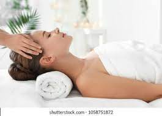
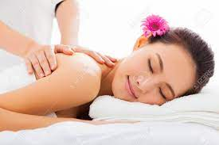

Relaxation Massage Typically a full body massage with light to a medium-firm pressure. A mixture of Swedish and rhythmic techniques are used to help relieve muscle tension, increase blood flow and promote overall relaxation. Great place to start if you have never had a massage before.
Deep Tissue Massage Like the name suggests, deep tissue massage uses firm-deep pressure to work into the deeper layers of the muscle where chronic pain/tension can be found. Techniques used to help break down the layers of tissue that have adhered together forming what is casually known as “knots” by helping release the affected area. Depending on your specific needs, this session can be either full body or focused.
Sports massage uses a mixture of stretching and stimulating muscle techniques that help athletes before, during, and after training by helping increase flexibility and blood flow and can be extremely useful with preventing sports related injuries. Please wear athletic wear for this session, or have a set to change into.